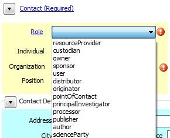
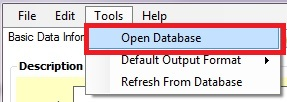
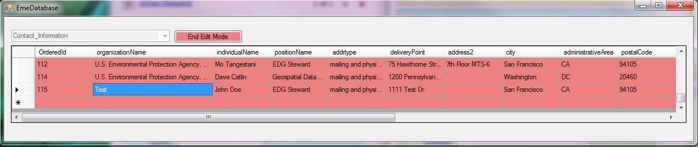
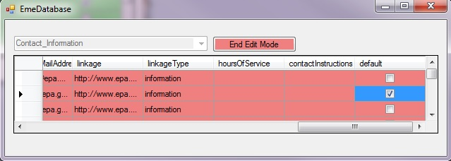

To add a Contact:
Click on the + sign and then click on the arrow next to "Contact (Required)".
The minimum required elements are: Role, Organization name and E-mail address.
If known, select a Program Code. These are EPA programs from the Federal Program Inventory.

To enter a Contact Manually:
In some cases, the user may want to enter the contact information manually, particularly when only one or two metadata records are being edited. It is recommended, however, that if the user is entering the same contact information for more than two metadata records, they follow the workflow for entering a contact automatically.
Select the Role of the contact.

To enter a Contact Automatically:
Click on the drop-down arrow in the "Select Contact" box and Select the appropriate name.
After a name has been selected, several of the Contact Details fields will be automatically populated.
To add a Distribution Contact to the contact table:
To add an additional contact to the preconfigured contact table, choose Tools > Open Database

If the "Contact_Information" table is not already displayed, choose "Contact_Information".
Click on the Enable Edit Mode button (the table will turn pink when in edit mode)
Scroll to the bottom of the table and enter the contact information.

After adding a new contact, click on the End Edit Mode button (the table will turn back to green) and close the table.The newly added contact should now display at the bottom of the list after clicking on the drop-down arrow in the Select Contact box.
To set the Default contact:
Setting a default contact allows the user to click on the "D" button to autopopulate the fields with the default contact information found in the "Contact_Information" table.
To open the table, choose Tools > Open Database
Click on the Enable Edit Mode button (the table will turn pink when in edit mode)
Scroll to the far right of the table and click on the default checkbox next to the default contact record.

After setting the default contact, click on the End Edit Mode button (the table will turn back to green) and close the table.
Additional Notes:
The Linkage element allows users to enter a url for any information on the Internet that is available about the dataset distribution. For more information on the Linkage element, click here.